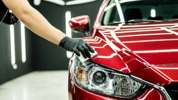
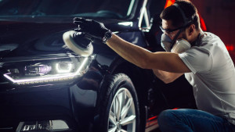
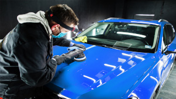

Servicios que ofrecemos
Mas de 20 de años de trayectoria en detailing.
Abrillantado
Correccion del barnis, realsa el brillo y el color removiendo las rayas de lavado,
Tratamiento Acrilico
Consiste de una corrección mas profunda, donde se aplican los 3 pasos Koch Chemie, aplicanco Menzerna
Tratamiento Ceramico
Nuestro servicio de Tratamiento Cerámico va más allá de una simple aplicación de una protección. Nosotros llevamos la estética de tu vehículo a otro nivel. Este servicio incluye la limpieza detallada de toda la unidad, el lavado de motor y descontaminación férrica de las llantas, en cualquiera de las opciones de este servicio que tenemos para ofrecerte.Como su nombre lo indica es una secuencia de procesos que incluye el lavado, descontaminado y el pulido que requiera la unidad dependiendo del estado para alcanzar nuestro estándar de entrega. Por último la aplicación de un coating o sellador cerámico que en su mayoría está compuesto por silicio, cuarzo, titanio o flourcarbono, lo que transforma a la pintura en una superficie con propiedades antiadherentes, hidrofóbica y con una capacidad de resistencia química y abrasiones increíble. El Tratamiento cerámico es la mejor opción para proteger la pintura de tu auto Bojo Flancito desde el primer día o devolverle la vida y dejarlo como 0km.